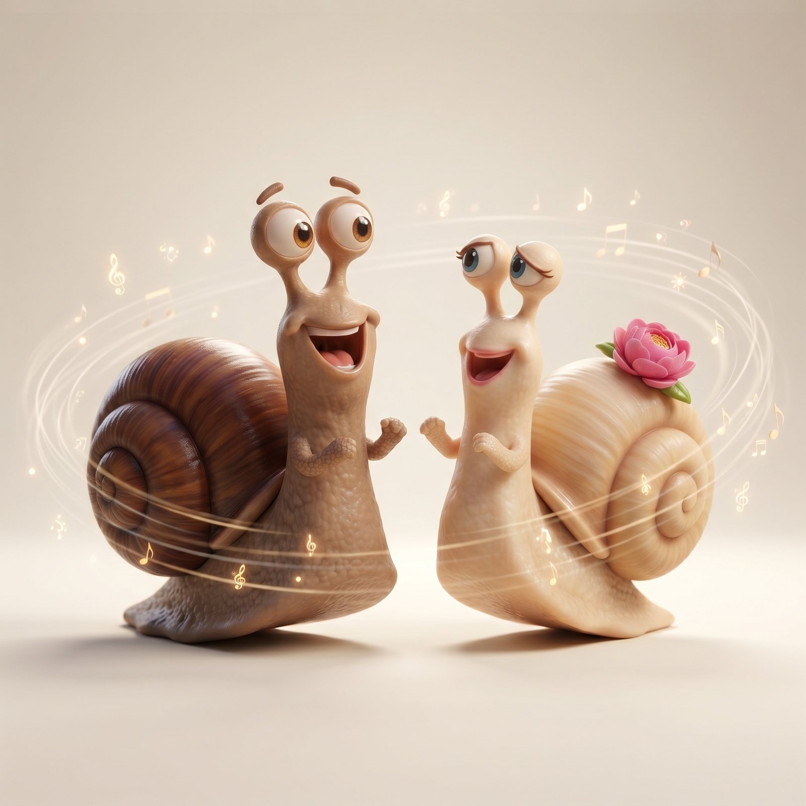
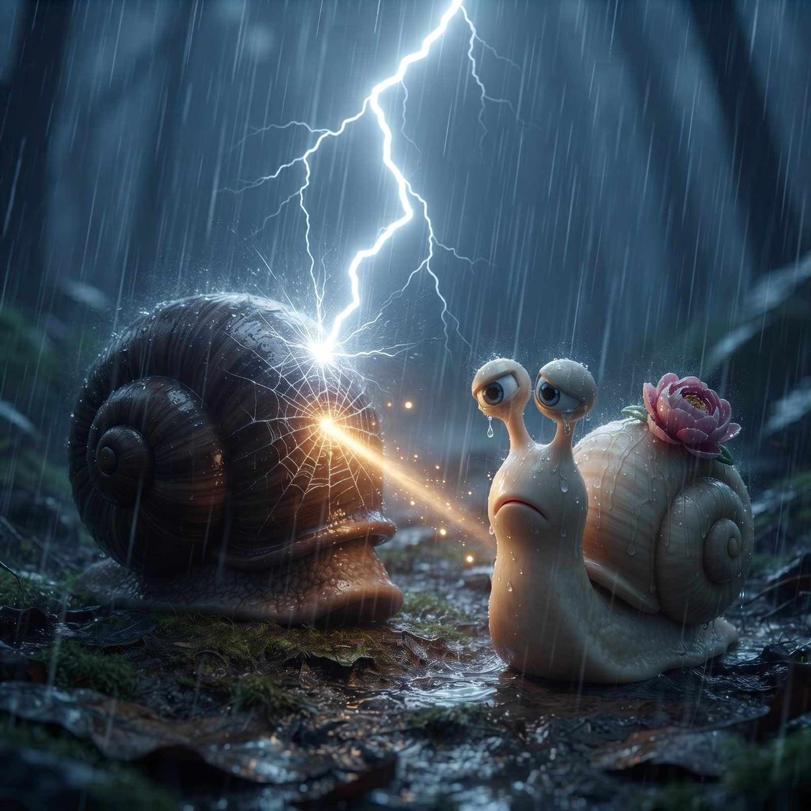

Для Риты. Октябрь 2026.
Рита, привет.
Хочу, чтобы у тебя было это письмо. Я не ожидаю ответа.
Спасибо за наш последний разговор. Было больно. Ты отзеркалила меня — и это было самое ценное, что ты могла мне дать. Какие-то вещи я понимаю, только почувствовав их на себе. Жаль, что таких разговоров не было раньше: я плохо принимаю критику, хотя сам выдаю самую жёсткую её версию. И жаль, что я так редко спрашивал, что ты думаешь о нас, — хотел искренности между нами, а сам не давал тебе высказаться.
Главное, в чём я виноват: после каждой ссоры я замолкал. Ты просила только одного — оставаться на связи, а я исчезал. Я думал, что берегу тебя от резких слов, а для тебя это было больнее любого моего мата.
Я не замечал, как сильно ты менялась. Ты умеешь меняться к лучшему по-настоящему — я ни в ком этого настолько не встречал. Ту Риту, какой ты стала, я люблю ещё больше, чем девушку, которую встретил. Эта женщина действительно прекрасна. Ты стала по-настоящему глубоким и заботливым человеком. Спасибо, что перестелила мне постель на работе. Я обожаю твои бутерброды, улиток, которых ты готовила, твоё чувство вкуса и то, как ты заботишься о своём здоровье. И я искренне рад, что у тебя появилась хорошая подруга. Я уважаю тебя. Любить и уважать одновременно — именно этого я хочу в отношениях. Пусть поздно, но я должен сказать тебе это сейчас.
Последнюю половину наших отношений тянула на себе ты, а я обижался на мелкие промахи. Одежда, которую ты для меня выбирала, мне очень идёт, и я с удовольствием ношу парфюм, который ты подарила. Снаружи ты меня изменила. А главного в себе я даже не начинал менять: я держался за старую обиду, вместо того чтобы отпустить её.

Мне не нужны другие женщины. То, что я сделал, я сделал, чтобы причинить тебе боль. Это было очень жестоко.
Я люблю тебя. Это не изменилось — и не изменится от того, что ты ответишь, если ответишь вообще. Ты как была, так и остаёшься моей лучшей секретаршей. Я не хочу это менять.
Прости за то, что моя семейная ситуация вошла в нашу жизнь. И спасибо, что напомнила, какого мужчину ты полюбила — того, кто хорошо относился к своей маме. Я помирился с ней. Это случилось благодаря тебе.
Прости за замечания о внешности. Я любил и люблю тебя всю, целиком. Если я люблю человека, то люблю его целиком — со всеми «изъянами» внешности, шрамами и запахами. И прости за мой ужасный чёрный юмор и насмешки. Я не понимал твоей ситуации и видел только свою сторону.
Помнишь, на первом свидании ты сказала, как сильно я изменил свою внешность? Я, как и ты, сделал себя сам — и меняться умею:
Если ты когда-нибудь захочешь попробовать снова — я готов, и готов делать по-другому. Я не обещаю, что получится с первого раза. Но я буду слушать, а не исчезать. Если нет — я приму это. Настоящие перемены во мне только начинаются — и желание меняться пробудила во мне ты. Дальше эту работу я делаю сам, независимо от твоего ответа.
Об одном всё-таки попрошу: если захочешь сказать, что ещё ты видела во мне со стороны, — для меня это будет важнее любого мнения. Даже если ты не хочешь быть со мной, твой взгляд поможет мне стать лучше. Когда захочешь, если захочешь.
Спасибо за всё. Отношения с тобой — лучшие в моей жизни. Я снова почувствовал себя молодым и влюблённым.
Говорят, по-настоящему влюбиться человек может всего несколько раз в жизни. А тем, кому везёт, удаётся влюбиться снова в одного и того же человека. Мне повезло.
Сергей